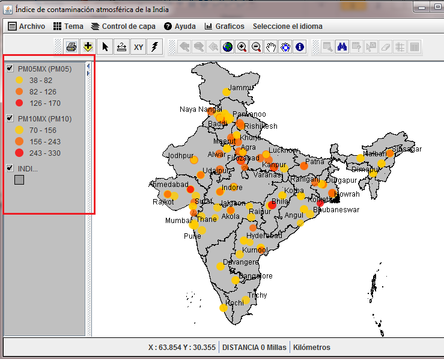

Tabla
de contenido [ TOC ]
El TOC o tabla
de contenidos, se encuentra a la izquierda del mapa.

- Cada entrada se llama 'leyenda' y representa un mapa 'capa' O
"tema"
- Si hace clic en una leyenda, esa capa se llama activa Capa o
capa seleccionada
- Sus propiedades de visualizacian (rendering) pueden ser
controladas usando El Editor de Leyendas y el
Las leyendas
pueden ser reordenadas usando Control de capa